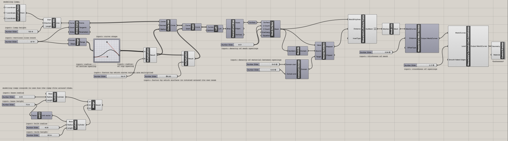
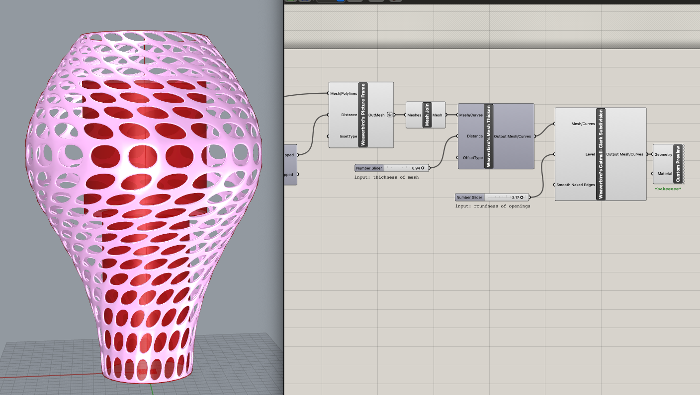
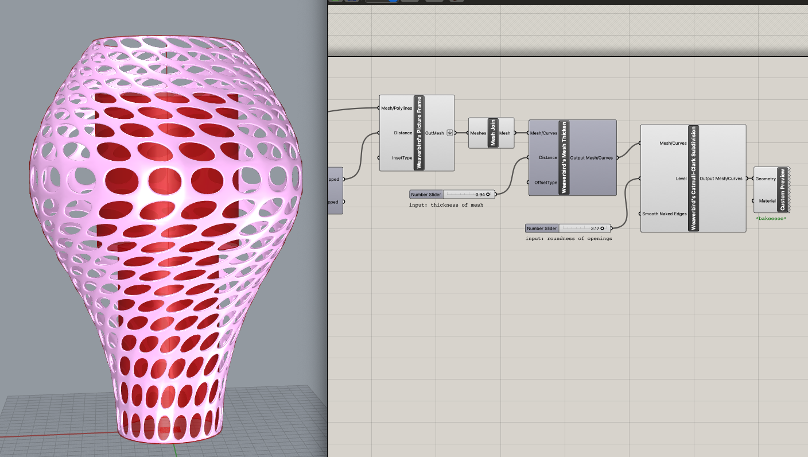

For the first part of this assignment, we needed to *finish* making the lamp from last week. I had already acquired and measured the lamp innards, and I had a general concept and had done some test printing at a small scale, but needed to land on a final model and actually do the damn thing.
If you recall, my plan was to make a mushroom lamp. I, however, did not make a mushroom lamp. I got sick of messing around with Rhino, kept confusing myself with how I would connect the cap and the stem without adhesive, and decided I would rather play around in Grasshopper again. It's just so much more fun?? You get to build out a definition then move knobs and watch it grow and change before your eyes?? Real life magic?! So I found a rad Grasshopper tutorial that used the Weaverbird plugin to create a parametric hanging lamp and followed along with that. There are lots of comments in my Grasshopper file that I'll link below of what's going down, so if you're curious, get in there. I'm not going to explain it all here.
I knew that whatever I made needed to hug the bottom of the base then get wider to accommodate the bulb, and I had a vision of printing it with this sparkly red PLA I bought for Halloween and having it be this disco blood droplet spreading little streams of light around everywhere. Then I remembered that one has to screw in a bulb, so if I wanted to print it in one piece, it needed to have a big enough opening to screw the bulb in through. This was disappointing, but at this point I had also just tested positive for covid and was being faced with my limits and mortality at all angles, so I just needed to make Something. Adorable tears of disco blood be damned. I was having a hard time envisioning what shape would best fit the lamp's structure, so I modeled the two main sections of the lamp innards as cylinders in Grasshopper with heights and widths corresponding to the base and bulb, then experimented with how the lamp design's parameters could shape around those.
 

Finally, it was time to slice up this bad boy in Cura and print. I flipped it over so that the wider opening was at the bottom and decided to use a raft and forgo supports. I set a slightly higher printing temperature (205) for the new filament (per Amazon review recommendations), and decided to print with concentric infill in case that happened to be prettier for light shining through. After a beautiful 4h 27m 15s of whirring, she came into existence. My iPad died during the timelapse, but you can see the first 2/3 being constructed below. You can also see how the raft simply did not want to let go of her top layer, so she's got a lil shag going on, but we're not gonna let that get us down.
Ta daaa! It fit! Let there be light!